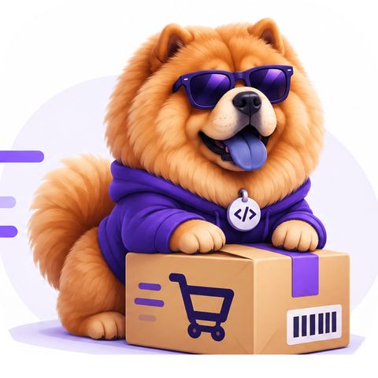
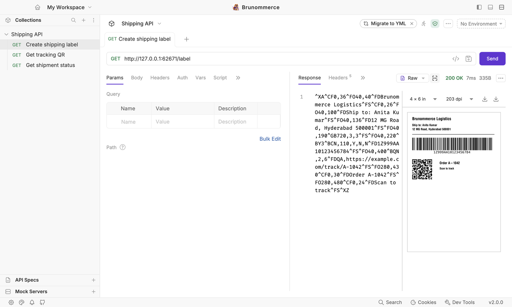
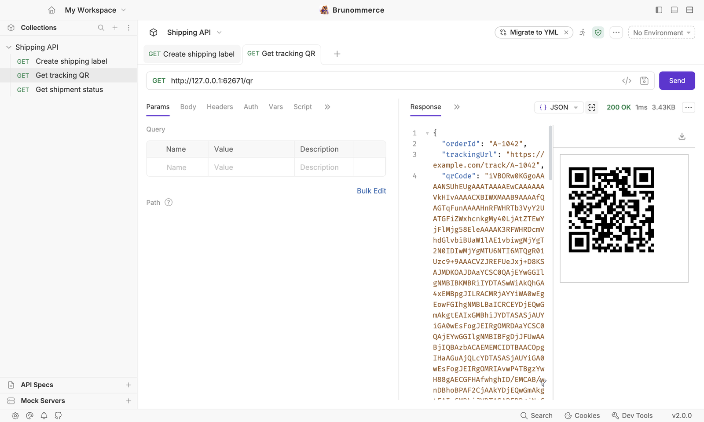
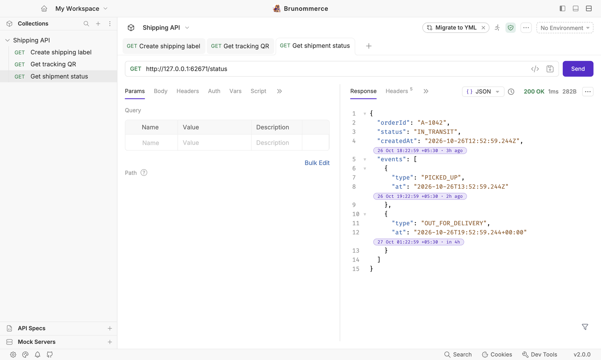
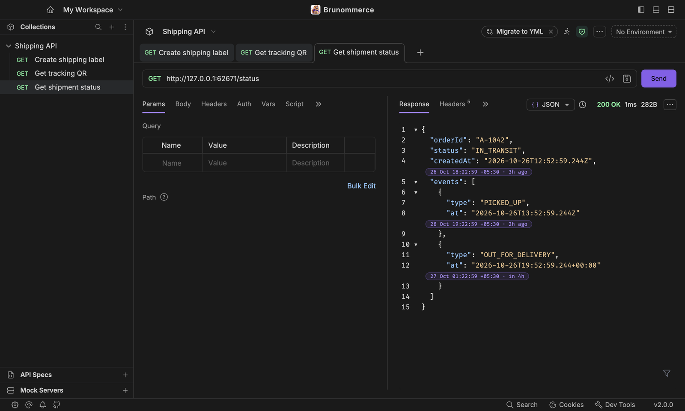

Brunommerce
See the shipping label right next to the response
Brunommerce is an API client for e-commerce and logistics teams. Send a request and the PDF label, ZPL label or QR code in the response shows beside it, with timestamps in your own time zone.
Unofficial fork of Bruno · not made, endorsed or supported by the Bruno maintainersLabel preview
Shipping labels, right beside the response
Carrier and warehouse APIs return labels as a PDF, as ZPL (Zebra printer language), or as base64 inside JSON or XML. When a response has one, a barcode button opens the label next to it, so you stop copying base64 into other tools.
- PDF labels, direct or base64 inside JSON or a SOAP
<GraphicImage>element. - ZPL labels, as plain text or base64, rendered with size and DPI choices.
- Several labels in one response, with a pager.
- Download the PDF, the ZPL source or the rendered image.

QR codes and images
QR codes hidden inside a response
Tracking APIs often return a QR code as a base64 image inside the JSON. Brunommerce finds it and shows it as an image you can scan or save.
- Base64 PNG, JPEG, GIF, WebP, AVIF, BMP and SVG.
- Data URLs and inline SVG markup.
- In JSON strings or XML elements, saved back as the original file.

qrCode field of a JSON response, shown as an image.Local time
Every timestamp, in your time zone
A small purple chip after each ISO-8601 timestamp shows the same moment in your time zone and how long ago it was. The chips are drawn beside the text, so selecting and copying still gives the original values, and a clock button hides them.


Good to know
Built on Bruno, kept separate
Same collections
Collections stay plain .bru and .yml files, so they open in Bruno and in Brunommerce.
Runs next to Bruno
Its own app name, data folder, settings and brunommerce:// link scheme, so it never takes over an installed Bruno.
Purple theme
A purple default theme for light and dark mode. Bruno's other themes are still there.
Open source
MIT licensed, with the original copyright kept. The label pane is also offered to Bruno as a pull request.
Your labels stay on your machine unless you say otherwise
PDF and image previews never use the network. Rendering ZPL sends the label, which often contains names and addresses, to a Labelary-compatible service. Brunommerce asks first, names the endpoint, and remembers your choice for that endpoint only. You can point it at your own Labelary server.
Install
Download Brunommerce
Get the latest pre-release from the Releases page. The installers are not signed with an Apple or Microsoft certificate, so the first launch shows a warning. It is expected, and these steps clear it.
macOS (Apple Silicon)
- Open the
.dmgand drag Brunommerce to Applications, or unzip the.zip. - If macOS blocks it, open System Settings → Privacy & Security and click Open Anyway.
- Or run this once in Terminal:
xattr -dr com.apple.quarantine /Applications/Brunommerce.appWindows (64-bit)
- Run the
.exeinstaller. - On “Windows protected your PC”, click More info, then Run anyway.
Check a download with shasum -a 256 <file> against SHA256SUMS.txt on the release. There are no automatic updates, and Intel Macs are not supported by the current builds. To build it yourself, see the build instructions.